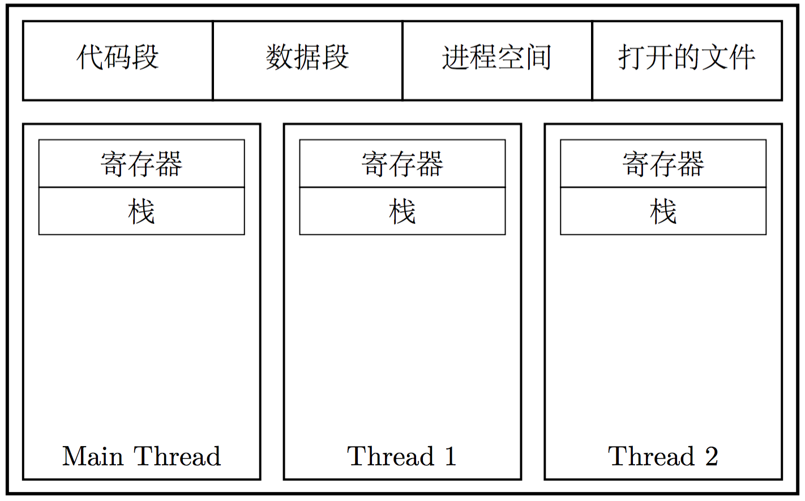
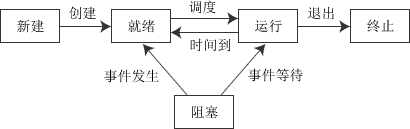
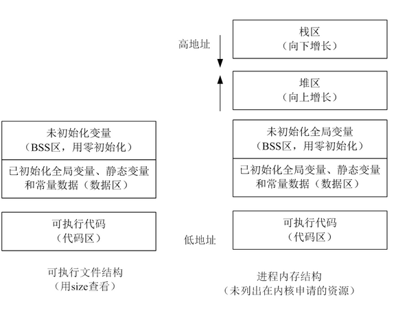
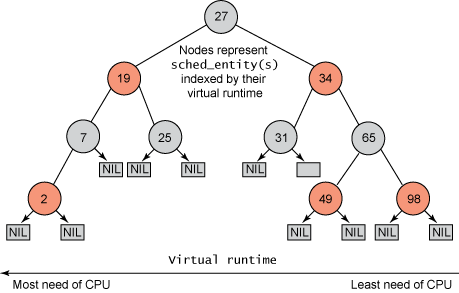

操作系统|进程
layout: post title:
category: 工具 tags: OS,进程,基础知识,面试 keywords: OS,进程,基础知识,面试
description: OS,process
操作系统的作用
操作系统对上层提供的系统调用，我们这里按下不表，主要看看操作系统在管理硬件资源方面做了哪些努力。
计算机硬件的能力是有限的。特别地，在计算机刚刚起步的阶段，计算机硬件通常是昂贵的。所以，为了充分发掘计算机的存储、运算能力，或者邪恶点说是榨干计算机的硬件资源，使得计算机在尽可能段的时间内处理更多的事情。
交给计算机的任务，大致可以分为两类：I/O 密集型任务和 CPU 密集型任务。顾名思义，CPU 密集型任务，在执行过程中，需要大量的 CPU 资源。对于这种任务，我们可以大胆地将 CPU 资源交给它来调用——反正总是要占用 CPU 资源的。大体上，涉及到磁盘 I/O、网络存取的任务，就都是 I/O 密集型任务；此类任务往往不需要太多 CPU 资源，对于 CPU 来说，大多数时间被空耗在等待 I/O 完成上了。当人们认识到交给计算机的任务可以分为这两类的时候，人们就开始考虑如何做 CPU 的任务调度。在任务调度上，人们经历了多道程序、分时系统与多任务系统等阶段。

在多任务系统中，操作系统接管了所有硬件资源并持有对硬件控制的最高权限。在操作系统中执行的程序，都以进程的方式运行在更低的权限中。所有的硬件资源，由操作系统根据进程的优先级以及进程的运行状况进行统一的调配。
进程的概念
- 进程是操作系统资源分配的基本单位(哪些资源？cpu、内存、IO设备)
- 进程是操作系统运行程序产生的一个逻辑上的独立实体,可以形象理解程序是菜谱，进程就是按照菜谱进行烹饪的过程。
程序的组成
- 二进制格式标识：每个程序文件都包含用于描述可执行文件格式的元信息（metainformation）。
- 机器语言指令：对程序算法进行编码。
- 程序入口地址：标识程序开始执行时的起始指令位置。
- 数据：程序文件包含的变量初始值和程序使用的字面常量值（比如字符串）。
- 符号表及重定位表：描述程序中函数和变量的位置及名称。这些表格有多种用途，其中包含调试和运行时的符号解析（动态链接）。
- 共享库和动态链接信息：程序文件所包含的一些字段，列出了程序运行时需要使用的共享库，以及加载共享库的动态链接器的路径名。
- 其它信息：程序文件还包含许多其它信息，用以描述如何创建进程。
从内核角度看，进程由用户内存空间和一系列内核数据结构组成，其中用户内存空间包含了程序代码及代码所使用的变量，而内核数据结构则用于维护进程状态信息。
记录在内核数据结构中的信息包括许多与进程相关的标识号、虚拟内存表、打开文件的描述符表、信号传递及处理的有关信息、进程资源使用及限制、当前工作目录和大量的其它信息。
进程的特征
- 动态性:进程是程序的一次执行，它拥有创建、就绪、运行、阻塞、终止等过程，具有一定的生命周期，是动态的产生变化和消亡的。 (有图，解释各个状态之间调整条件)
- 并发性:多个进程实体，同存于内存中，能在一段时间内同时运行，并发性是进程的重要特征，同时也是操作系统的重要特征。
- 并发的优点引入进程的目的就是为了使程序能与其他进程的程序并发执行，以提高资源利用率
- 并发和并行的区别？单核cpu中，并发是一个时间段内多个进程或线程交替运行，并行是同一时刻多个进程或线程同时运行
- 什么是核:核（Die）又称为内核，是CPU最重要的组成部分。CPU中心那块隆起的芯片就是核心，是由单晶硅以一定的生产工艺制造出来的，CPU所有的计算、接受/存储命令、处理数据都由核心执行。各种CPU核心都具有固定的逻辑结构，一级缓存、二级缓存、执行单元、指令级单元和总线接口等逻辑单元都会有科学的布局。
- 多核cpu和多个cpu的区别:如果我们选择多个单核CPU，那么每一个CPU都需要有较为独立的电路支持，有自己的Cache，而他们之间通过板上的总线进行通信。假如在这样的架构上，我们要跑一个多线程的程序（常见典型情况），不考虑超线程，那么每一个线程就要跑在一个独立的CPU上，线程间的所有协作都要走总线，而共享的数据更是有可能要在好几个Cache里同时存在。这样的话，总线开销相比较而言是很大的，怎么办？那么多Cache，即使我们不心疼存储能力的浪费，一致性怎么保证？如果真正做出来，还要在主板上占多块地盘，给布局布线带来更大的挑战，怎么搞定？如果我们选择多核单CPU，那么我们只需要一套芯片组，一套存储，多核之间通过芯片内部总线进行通信，共享使用内存。在这样的架构上，如果我们跑一个多线程的程序，那么线程间通信将比上一种情形更快。如果最终实现出来，对板上空间的占用较小，布局布线的压力也较小。看起来，多核单CPU完胜嘛。可是，如果需要同时跑多个大程序怎么办？每个程序都需要用很多内存怎么办？假设俩大程序，每一个程序都好多线程还几乎用满cache，它们分时使用CPU，那在程序间切换的时候，光指令和数据的替换就要费多大事情啊！所以呢，大部分一般咱们使用的电脑，都是单CPU多核的，比如我们配的Dell T3600，有一颗Intel Xeon E5-1650，6核，虚拟为12个逻辑核心。少部分高端人士需要更强的多任务并发能力，就会搞一个多颗多核CPU的机子，Mac Pro就可以有两颗。高端的服务器一般都是多颗多核，甚至还高频率。
- 多核是如何实现并发的:并发的概念是同一时间段内多个任务的“同时”运行，cpu是中央处理单元，逻辑上的处理单元，但现在多核cpu的情况下，实际的硬件计算单元时核，每个核有自己的独享寄存器，一二级缓存，因此多核的使用，即并行跑多个线程还是进程是cpu的调度决定的。
- 一个进程如何在多核中执行:一个进程可能包含多个线程，每个线程可以看成是一个任务（Task），线程是调度的最小单位。在大多数支持多核的操作系统上，都能实现把一个进程的多个线程放不同的核心上跑，这是没有问题的，不同的线程通常有自己独立的线程栈，所以除了访问全局变量外基本上不影响。缓存问题有协议来保证一致性，更复杂的一致性问题可以用锁来保护，当然了，锁会降低效率那是肯定的。1。被一个核挂起后到另一个核上开始跑。可以，ARM上就支持这么做，主流操作系统平台也都支持，但频繁的任务迁移实际上是对性能有害的，一般操作系统不会频繁的迁移任务。对于ARM的这个模型，官方声称的代价是微秒级，但这个代价不包括L2 cache同步的代价，实际上在 L2 snooping阶段，CPU的性能是有点差的，一般来说等待L2完全同步，大概需要毫秒级的开销，具体要看操作系统和硬件的实现。2。一个进程的多个线程同时在多个核上跑据我所知，Windows和Linux目前也都支持。
- 保持cache的一致性:保持cache一致性自然要靠cache一致性协议。cache的不一致，是因为同样一份数据在多个cache中存在多份拷贝，如果数据在一个cache中被写另一个cache却不知道，就会有不一致。对于多核共享cache最基本的方法就是写失效和写更新两种。每个核的专有cache要时刻监听总线上的写cache请求，一旦监听到总线要写的cache块自己肚子里也有，就将自己肚子里的cache块置为失效（写失效），等到下次该块cache miss再重新load最新的数据。或者在总线更新某块的时候，刚好自己肚子里也有一份该块的拷贝，顺便把自己内部的cache块也更新了（写更新），就可以保证自己一直是最新的数据。从硬件原理上来讲，主要就是做到写操作即时即刻的传递给所有的核/cache。写操作一定要广播出去，只要通知到位，就有办法。
- 异步性:由于进程的相互制约，使进程具有执行的间断性，即进程按各自独立的、 不可预知的速度向前推进。异步性会导致执行结果的不可再现性，为此，在操作系统中必须配置相应的进程同步机制。(如何同步:后续有相关同步说明todo)
- 结构性:每个进程都配置一个PCB对其进行描述。从结构上看，进程实体是由程序段、数据段和进程控制段三部分组成的。(具体什么结构:见后续进程结构说明todo)
进程状态简介
进程在其生命周期内，由于系统中各进程之间的相互制约关系及系统的运行环境的变化，使得进程的状态也在不断地发生变化（一个进程会经历若干种不同状态）。通常进程有以下五种状态，前三种是进程的基本状态。
-
运行状态：进程正在处理机上运行。在单处理机环境下，每一时刻最多只有一个进程处于运行状态。
-
就绪状态：进程已处于准备运行的状态，即进程获得了除处理机之外的一切所需资源，一旦得到处理机即可运行。
-
阻塞状态，又称等待状态：进程正在等待某一事件而暂停运行，如等待某资源为可用（不包括处理机）或等待输入/输出完成。即使处理机空闲，该进程也不能运行。
-
创建状态：进程正在被创建，尚未转到就绪状态。创建进程通常需要多个步骤：首先申请一个空白的PCB，并向PCB中填写一些控制和管理进程的信息；然后由系统为该进程分配运行时所必需的资源；最后把该进程转入到就绪状态。
-
结束状态：进程正从系统中消失，这可能是进程正常结束或其他原因中断退出运行。当进程需要结束运行时，系统首先必须置该进程为结束状态，然后再进一步处理资源释放和回收等工作。

注意区别就绪状态和等待状态：就绪状态是指进程仅缺少处理机，只要获得处理机资源就立即执行；而等待状态是指进程需要其他资源（除了处理机）或等待某一事件。之所以把处理机和其他资源划分开，是因为在分时系统的时间片轮转机制中，每个进程分到的时间片是若干毫秒。也就是说，进程得到处理机的时间很短且非常频繁，进程在运行过程中实际上是频繁地转换到就绪状态的；而其他资源（如外设）的使用和分配或者某一事件的发生（如I/O操作的完成）对应的时间相对来说很长，进程转换到等待状态的次数也相对较少。这样来看，就绪状态和等待状态是进程生命周期中两个完全不同的状态，很显然需要加以区分。
进程状态——创建
-
每个进程都有一个进程号（PID），进程号是一个正数，用以唯一标识系统中的某个进程。
-
0号进程:内核是一个大的程序，可以控制硬件，也可以创建、运行、终止、控制所有的进程。当内核被加载到内存后，首先就会有完成内核初始化的函数start_kernel()从无到有的创建一个内核线程swap，并设置其PID为0，即进程0；它也叫闲逛进程；进程0执行的是cpu_idle()函数，该函数仅有一条hlt汇编指令，就是在系统闲置时用来降低电力的使用和减少热的产生。同时进程0的PCB叫做init_task，在很多链表中起了表头的作用。当就绪队列中再没有其他进程时，闲逛进程就会被调度程序选中，以此来省电，减少热量的产生。
-
1号进程:init进程由idle通过kernel_thread创建，在内核空间完成初始化后, 加载init程序, 并最终用户空间由0进程创建，完成系统的初始化. 是系统中所有其它用户进程的祖先进程。Linux中的所有进程都是有init进程创建并运行的。首先Linux内核启动，然后在用户空间中启动init进程，再启动其他系统进程。在系统启动完成完成后，init将变为守护进程监视系统其他进程。
-
2号进程:kthreadd进程由idle通过kernel_thread创建，并始终运行在内核空间, 负责所有内核线程的调度和管理。它的任务就是管理和调度其他内核线程kernel_thread, 会循环执行一个kthread的函数，该函数的作用就是运行kthread_create_list全局链表中维护的kthread, 当我们调用kernel_thread创建的内核线程会被加入到此链表中，因此所有的内核线程都是直接或者间接的以kthreadd为父进程
进程内存布局结构
每个进程所分配的内存由很多部分组成，通常称之为“段（segment）”：
-
文本段：包含了进程运行的程序机器语言指令。文本段具有只读属性，以防止进程通过错误指针意外修改自身指令。因为多个进程可同时运行同一程序，所以又将文本段设为可共享，这样，一份程序代码的拷贝可以映射到所有这些进程的虚拟地址空间中。
-
初始化数据段：包含显示初始化的全局变量和静态变量。当程序加载到内存时，从可执行文件中读取这些变量的值。
-
未初始化数据段：包含了未进行显示初始化的全局变量和静态变量。程序启动之前，系统将本段内所有内存初始化为0。出于历史原因，此段常被称为BSS段，这源于老版本的汇编语言助记符“block started by symbol”。将经过初始化的全局变量和静态变量与未初始化的全局变量和静态变量分开存放，其主要原因在于程序在磁盘上存储时，没有必要为未经初始化的变量分配存储空间。相反，可执行文件只需记录未初始化数据段的位置及所需大小，直到运行时再由程序加载器来分配空间。
-
栈（stack）：是一个动态增长和收缩的段，有栈帧（stack frames）组成。系统会为每个当前调用的函数分配一个栈帧。栈帧中存储了函数的局部变量（所谓自动变量）、实参和返回值。
-
堆（heap）：是可在运行时（为变量）动态进行内存分配的一块区域。堆顶端称为program break。
对于初始化和未初始化的数据段而言，不太常用、但表达更清晰的称为分别是用户初始化数据段（user-initialized data segment）和零初始化数据段（zero-initialized data segment）。

在大多数Unix（包括Linux）中的C语言编程环境提供了3个全局符号（symbol）：etext、edata、end，可以在程序中使用这些符号以获取相应程序文本段、初始化数据段和非初始化数据段结尾处下一字节的地址。

图中标灰的区域表示这些范围在进程虚拟地址空间中不可用，也就是说，没有为这些区域创建页表（page table）。 详细参考文章
进程数据设计结构
为了描述和控制进程的运行，系统为每个进程定义了一个数据结构——进程控制块（PCB）。 它是进程重要的组成部分，它记录了操作系统所需的、用于描述进程的当前状态和控制进程的全部信息。 操作系统就是根据进程的PCB来感知进程的存在，并依此对进程进行管理和控制。 PCB是进程存在的唯一标识。 Linux系统下PCB结构定义如下
|
|
fork函数具体实现过程
|
|
fork()系统调用会通过复制一个现有进程来创建一个全新的进程. 进程被存放在一个叫做任务队列的双向循环链表当中.链表当中的每一项都是类型为task_struct称之为进程描述符的结构,也就是我们通常说的进程PCB。 fork具体实现流程 linux平台通过clone()系统调用实现fork()。 fork(),vfork()和clone()库函数都根据各自需要的参数标志去调用clone()，然后由clone()去调用do_fork()。 再然后do_fork()完成了创建中的大部分工作，do_fork()定义在kernel/fork.c当中。该函数调用copy_process()，具体调用流程下图所示。

|
|
上面的程序重定向输出结果
|
|
原因：和终端交互时，通常默认是行缓存，因此fork之前printf直接输出(遇见了换行符)，而重定向后就不是行缓冲了，子进程拷贝了父进程的文件描述符以及缓冲区，因此会输出两次。如果去掉fork之前printf的换行符，则直接运行程序也会输出两次。
|
|
- 全缓冲 。全缓冲指的是系统在填满标准IO缓冲区之后才进行实际的IO操作；注意，对于驻留在磁盘上的文件来说通常是由标准IO库实施全缓冲。
- 行缓冲 。在这种情况下，标准IO在输入和输出中遇到换行符时执行IO操作；注意，当流涉及终端的时候，通常使用的是行缓冲。
- 无缓冲 。无缓冲指的是标准IO库不对字符进行缓冲存储；注意，标准出错流stderr通常是无缓冲的。
vfork
vfork()的诞生是在fork()还没有写时拷贝的时候，因为fork创建一个子进程的成本太大了，如果一下子创建好多了那么程序的效率一定会下降，之后就有人提出了vfork(). vfork的实现原理非常简单，就是子进程，父进程完全公用一个资源. 就是是有人修改了内容，甚至main()函数退出了也不会新开辟一个空间. 所以这里里会有问题的，如果你的一个子进程没有使用exit()退出，那么程序就会出现段错误。
为什么会出现段错误? 在函数栈上面，子进程运行结束了，main的函数栈被子进程释放了，然后父进程在使用的时候，就访问不到了，一旦vfork出子进程，退出的时候需要使用exit来结束。
fork与vfork的不同点
- fork父子进程交替运行，vfork保证子进程先运行，父进程阻塞，直到子进程结束（或子进程调用了exec或exit）.
- fork实现了写时拷贝. 而vfork直接让父子进程共用公用资源，避免多开辟空间拷贝,
- vfork必须使用exit或者excl退出.
- 就算是fork使用了写时拷贝，也没有vfork性能高.
- 每个系统上的vfork都有问题，推荐不要使用.(有哪些问题？)
进程调度机制
为什么需要进程调度
传统上把进程分类为“I/O密集型”或“CPU密集型”
- I/O密集型，频繁使用I/O设备，并花费很多时间等待I/O操作，例如数据库服务器，文本编辑器
- CPU密集型，即计算密集型，花费大量CPU时间进行数值计算，例如图形绘制程序 对于上述两种类型，I/O密集型，在等待I/O时，所占用的cpu资源对系统而言是很宝贵的，因此需要调度程序把进程占用cpu资源释放出来，而对于CPU密集型，占用过多的cpu资源，导致其他进程等待时间过长，因此也需要调度程序来释放CPU资源，所以内核需要提供一个方法，在各个进程之间尽可能公平的共享cpu时间，同时需要考虑不同任务之间的优先级。
调度目标
- 进程相应时间尽可能快
- 后台作业的吞吐量尽可能高
- 尽可能避免进程的饥饿现象
- 优先级低和高优先级的需要尽可能调和
传统操作系统的调度基于分时(time sharing)技术: 多个进程以"时间多路服用"方式运行, 因为CPU的时间被分成"片(slice)", 给每个可运行进程分配一片CPU时间片, 当然单处理器在任何给定的时刻只能运行一个进程.
如果当前可运行进程的时限(quantum)到期时(即时间片用尽), 而该进程还没有运行完毕, 进程切换就可以发生.
分时依赖于定时中断, 因此对进程是透明的, 不需要在承租中插入额外的代码来保证CPU分时.
调度策略也是根据进程的优先级对他们进行分类. 有时用复杂的算法求出进程当前的优先级, 但最后的结果是相同的: 每个进程都与一个值(优先级)相关联, 这个值表示把进程如何适当地分配给CPU.
在linux中, 进程的优先级是动态的. 调度程序跟踪进程正在做什么, 并周期性的调整他们的优先级. 在这种方式下, 在较长的时间间隔内没有任何使用CPU的进程, 通过动态地增加他们的优先级来提升他们. 相应地, 对于已经在CPU上运行了较长时间的进程, 通过减少他们的优先级来处罚他们.
调度器发展
一开始的调度器是复杂度为**$O(n)$的始调度算法**(实际上每次会遍历所有任务，所以复杂度为O(n)), 这个算法的缺点是当内核中有很多任务时，调度器本身就会耗费不少时间，所以，从linux2.5开始引入赫赫有名的**$O(1)$调度器**
然而，linux是集全球很多程序员的聪明才智而发展起来的超级内核，没有最好，只有更好，在$O(1)$调度器风光了没几天就又被另一个更优秀的调度器取代了，它就是CFS调度器Completely Fair Scheduler. 这个也是在2.6内核中引入的，具体为2.6.23，即从此版本开始，内核使用CFS作为它的默认调度器，$O(1)$调度器被抛弃了, 其实CFS的发展也是经历了很多阶段，最早期的楼梯算法(SD), 后来逐步对SD算法进行改进出RSDL(Rotating Staircase Deadline Scheduler), 这个算法已经是"完全公平"的雏形了， 直至CFS是最终被内核采纳的调度器, 它从RSDL/SD中吸取了完全公平的思想，不再跟踪进程的睡眠时间，也不再企图区分交互式进程。它将所有的进程都统一对待，这就是公平的含义。CFS的算法和实现都相当简单，众多的测试表明其性能也非常优越 CFS调度算法
任务存储在以时间为顺序的红黑树中（由 sched_entity 对象表示），对处理器需求最多的任务 （最低虚拟运行时）存储在树的左侧，处理器需求最少的任务（最高虚拟运行时）存储在树的右侧。 为了公平，调度器然后选取红黑树最左端的节点调度为下一个以便保持公平性。任务通过将其运行时间添加到虚拟运行时， 说明其占用 CPU 的时间，然后如果可运行，再插回到树中。这样，树左侧的任务就被给予时间运行了，树的内容从右侧迁移到左侧以保持公平。 因此，每个可运行的任务都会追赶其他任务以维持整个可运行任务集合的执行平衡。

进程调度的激活方式
- 周期调度器scheduler_tick通过linux定时器周期性的被激活, 进行程序调度
- 进程主动放弃CPU或者发生阻塞时, 则会调用主调度器schedule进行程序调度
进程上下文切换
上下文切换概念
操作系统管理很多进程的执行. 有些进程是来自各种程序、系统和应用程序的单独进程，而某些进程来自被分解为很多进程的应用或程序。当一个进程从内核中移出，另一个进程成为活动的, 这些进程之间便发生了上下文切换. 操作系统必须记录重启进程和启动新进程使之活动所需要的所有信息. 这些信息被称作上下文, 它描述了进程的现有状态, 进程上下文是可执行程序代码是进程的重要组成部分, 实际上是进程执行活动全过程的静态描述, 可以看作是用户进程传递给内核的这些参数以及内核要保存的那一整套的变量和寄存器值和当时的环境等
进程的上下文信息包括， 指向可执行文件的指针, 栈, 内存(数据段和堆), 进程状态, 优先级, 程序I/O的状态, 授予权限, 调度信息, 审计信息, 有关资源的信息(文件描述符和读/写指针), 关事件和信号的信息, 寄存器组(栈指针, 指令计数器)等等, 诸如此类.
处理器总处于以下三种状态之一
- 内核态，运行于进程上下文，内核代表进程运行于内核空间；
- 内核态，运行于中断上下文，内核代表硬件运行于内核空间；
- 用户态，运行于用户空间。
用户空间的应用程序，通过系统调用，进入内核空间。这个时候用户空间的进程要传递 很多变量、参数的值给内核，内核态运行的时候也要保存用户进程的一些寄存器值、变量等。所谓的”进程上下文”
硬件通过触发信号，导致内核调用中断处理程序，进入内核空间。这个过程中，硬件的一些变量和参数也要传递给内核，内核通过这些参数进行中断处理。所谓的”中断上下文”，其实也可以看作就是硬件传递过来的这些参数和内核需要保存的一些其他环境（主要是当前被打断执行的进程环境）。
上下文切换大概流程
上下文切换(有时也称做进程切换或任务切换)是指CPU从一个进程或线程切换到另一个进程或线程，稍微详细描述一下，上下文切换可以认为是内核（操作系统的核心）在 CPU 上对于进程（包括线程）进行以下的活动：
- 挂起一个进程，将这个进程在 CPU 中的状态（上下文）存储于内存中的某处，
- 在内存中检索下一个进程的上下文并将其在 CPU 的寄存器中恢复
- 跳转到程序计数器所指向的位置（即跳转到进程被中断时的代码行），以恢复该进程
因此上下文是指某一时间点CPU寄存器和程序计数器的内容, 广义上还包括内存中进程的虚拟地址映射信息. 上下文切换只能发生在内核态中, 上下文切换通常是计算密集型的。也就是说，它需要相当可观的处理器时间，在每秒几十上百次的切换中，每次切换都需要纳秒量级的时间。所以，上下文切换对系统来说意味着消耗大量的 CPU 时间，事实上，可能是操作系统中时间消耗最大的操作。
进程同步与互斥
在多道程序设计系统中，同一时刻可能有许多进程，这些进程之间存在两种基本关系：竞争关系和协作关系。
进程的互斥、同步、通信都是基于这两种基本关系而存在的。
- 为了解决进程间竞争关系（间接制约关系）而引入进程互斥；
- 为了解决进程间松散的协作关系( 直接制约关系)而引入进程同步；
- 为了解决进程间紧密的协作关系而引入进程通信。
互斥
互斥，又称间接制约关系，是指系统中的某些共享资源，一次只允许一个线程访问。当一个线程正在访问该临界资源时，其它线程必须等待。进程的互斥（mutual exclusion ）是解决进程间竞争关系( 间接制约关系) 的手段。 进程互斥指若干个进程要使用同一共享资源时，任何时刻最多允许一个进程去使用，其他要使用该资源的进程必须等待，直到占有资源的进程释放该资源。
进程互斥的方法
-
信号量 信号量是一个特殊的变量，程序对其访问都是原子操作，且只允许对它进行等待（即P(信号变量))和发送（即V(信号变量))信息操作。最简单的信号量是只能取0和1的变量，这也是信号量最常见的一种形式，叫做二进制信号量。而可以取多个正整数的信号量被称为通用信号量。这里主要讨论二进制信号量。
- 信号量的工作原理 由于信号量只能进行两种操作等待和发送信号，即P(sv)和V(sv),他们的行为是这样的:
- P(sv)：如果sv的值大于零，就给它减1；如果它的值为零，就挂起该进程的执行
- V(sv)：如果有其他进程因等待sv而被挂起，就让它恢复运行，如果没有进程因等待sv而挂起，就给它加1.
- 信号量的工作原理 由于信号量只能进行两种操作等待和发送信号，即P(sv)和V(sv),他们的行为是这样的:
举个例子，就是两个进程共享信号量sv，一旦其中一个进程执行了P(sv)操作，它将得到信号量，并可以进入临界区，使sv减1。而第二个进程将被阻止进入临界区，因为当它试图执行P(sv)时，sv为0，它会被挂起以等待第一个进程离开临界区域并执行V(sv)释放信号量，这时第二个进程就可以恢复执行。
- PV原语
同步
同步又称直接制约关系，是指多个线程（或进程）为了合作完成任务，必须严格按照规定的某种先后次序来运行。进程同步指两个以上进程基于某个条件来协调它们的活动。一个进程的执行依赖于另一个协作进程的消息或信号，当一个进程没有得到来自于另一个进程的消息或信号时则需等待，直到消息或信号到达才被唤醒。
不难看出，进程互斥关系是一种特殊的进程同步关系，即逐次使用互斥共享资源，也是对进程使用资源次序上的一种协调。
进程同步的方法
Linux 下常见的进程同步方法有：
- 信号量
- 管程
- 互斥量（基于共享内存的快速用户态 ）
- 文件锁（通过 fcntl 设定，针对文件）
通信
并发进程之间的交互必须满足两个基本要求：同步和通信。
进程竞争资源时要实施互斥，互斥是一种特殊的同步，实质上需要解决好进程同步问题，进程同步是一种进程通信，通过修改信号量，进程之间可建立起联系，相互协调运行和协同工作。但是信号量与PV操作只能传递信号，没有传递数据的能力。有些情况下进程之间交换的信息量虽很少，例如，仅仅交换某个状态信息，但很多情况下进程之间需要交换大批数据，例如，传送一批信息或整个文件，这可以通过一种新的通信机制来完成，进程之间互相交换信息的工作称之为进程通信IPC （InterProcess Communication）（主要是指大量数据的交换）。
进程间通信的方式：
- mmap（文件映射）
- 信号
- 管道
- 共享内存
- 消息队列（重要）
- 信号量集（与signal无关）
- 网络（套接字）
同步、互斥、通信
- 进程互斥、同步与通信的关系：进程竞争资源时要实施互斥，互斥是一种特殊的同步，实质上需要解决好进程同步问题，进程同步是一种进程通信，由此看来，进程互斥、同步都可以看做进程的通信；
- 信号量是进程同步与互斥的常用方法，也可以作为低级的进程通信方法，用于传递控制信号；
- 管道与管程是不同的，管程是进程同步的方式，而管道则是进程通信的方式；
- 互斥是指某一资源同时只允许一个访问者对其进行访问，具有唯一性和排它性。但互斥无法限制访问者对资源的访问顺序，即访问是无序的。
- 同步是指在互斥的基础上（大多数情况），通过其它机制实现访问者对资源的有序访问。
- 同步其实已经实现了互斥，所以同步是一种更为复杂的互斥。
- 互斥是一种特殊的同步。
进程结束与退出
进程退出的方式
- 正常退出
- 从main函数正常退出
- 调用exit
- 调用_exit
- 异常退出
- 调用abort
- 信号终止
_exit、exit以及_Exit的区别
- _exit是linux系统调用，关闭所有文件描述符，然后退出进程。
- exit是C语言的库函数，最终的调用还是_exit，但在此之前会进行标准输出的缓存，调用atexit注册的函数等，在C语言中main函数调用return就等于调用exit
- _Exit同样是C语言的库函数，等价于_exit
_exit存在的理由
由fork()函数创建的子进程分支里，正常情况下使用函数exit()是不正确的，这是因为使用它会导致标准输入输出的缓冲区被清空两次，而且临时文件可能被意外删除。” 因为在 fork 之后，exec 之前，很多资源还是共享的（如某些文件描述符），如果使用 exit 会关闭这些资源，导致某些非预期的副作用（如删除临时文件等）。
_exit系统调用
进程退出由exit系统调用来完成, 这使得内核有机会将该进程所使用的资源释放回系统中
进程终止时，一般是调用exit库函数（无论是程序员显式调用还是编译器自动地把exit库函数插入到main函数的最后一条语句之后）来释放进程所拥有的资源。
exit系统调用的入口点是sys_exit()函数, 需要一个错误码作为参数, 以便退出进程。